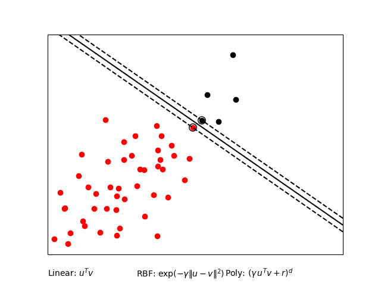
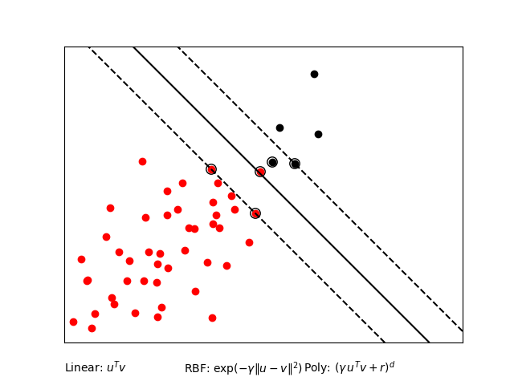
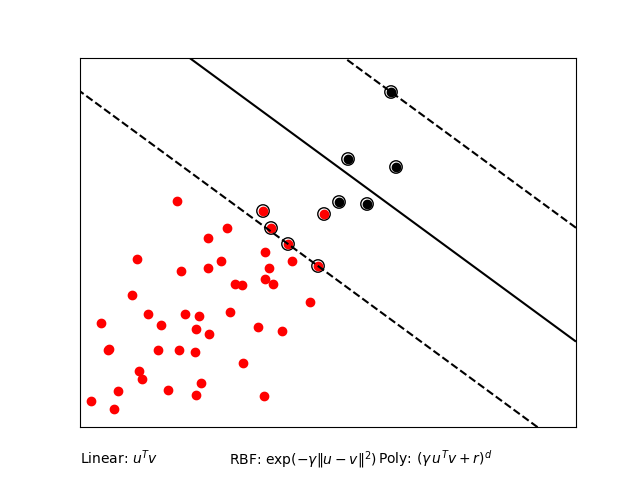
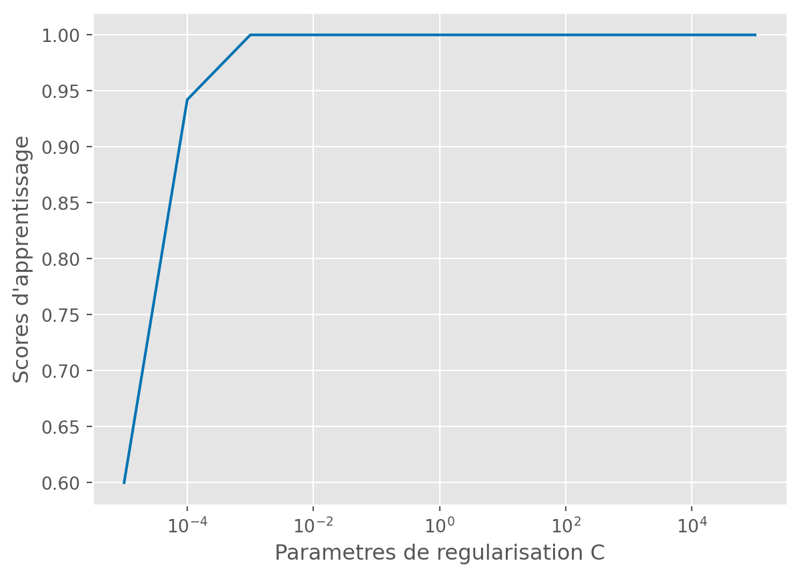
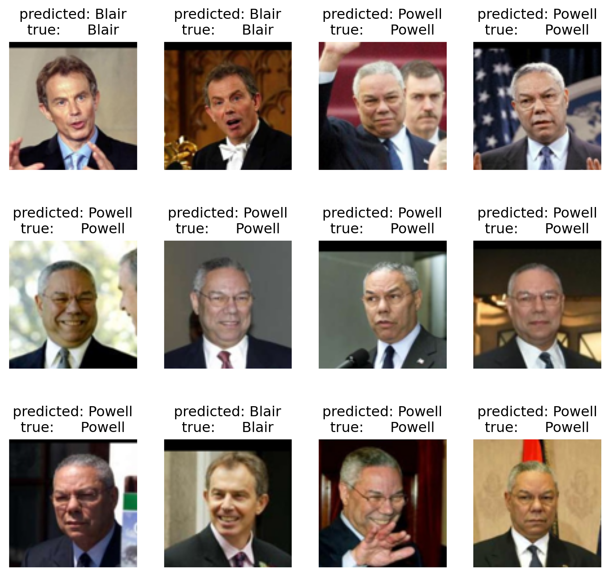

Les machines à vecteurs de support (Support Vector Machine, SVM, en anglais), sont un ensemble de méthodes d’apprentissage supervisé utilisées pour la classification, la régression et la détection des valeurs aberrantes. La popularité des méthodes SVM, pour la classification binaire en particulier, provient du fait qu’elles reposent sur l’application d’algorithmes de recherche de règles de décision linéaires : on parle d’hyperplans (affines) séparateurs.
Le code complet est disponible dans le fichier \(\texttt{svm\_script.py}\) dans le dossier \(\texttt{Code}\).
Dans ce compte rendu, nous avons fixé une graine \(\texttt{np.random.seed(1234)}\) pour la reproductibilité des résultats.
Question 1
Pour commencer, écrivons un code qui va classifier la classe 1 contre la classe 2 du dataset \(\texttt{iris}\) en utilisant les deux premières variables et un noyau linéaire.
Mean generalization score over 50 iterations:
Train score: 0.7148
Test score: 0.674
Nous séparons donc aléatoirement le jeu de données en deux parties. L’une est réservée à l’entraîenement et l’autre au test. Nous calculons alors les scores obtnus pour chacun des échantillons pour un noyau linéaire. Nous réitérons cette action 50 fois, afin d’obtenir les scores moyens des deux échantillons :
- Le score moyen de l’échantillon d’entraînement : \(0.7148\)
- Le score moyen de l’échantillon de test : \(0.674\)
Le socre moyen de l’échantillon d’entraînement est légèremenr supérieur à celui de l’échantillon test. Ce résultat semble pluôt cohérent, le modèle est plus performant sur les données avec lesquelles il s’est entraîné, puisqu’il les a déjà “vues”. De plus, un écart entre le score d’entraînement et le score de test est indicateur d’overfitting : le modèle à “surapprit” sur les données d’apprentissage. Ici, l’écart est assez faible, le modèle n’a pas trop de mal à généraliser ce qu’il a apprit sur l’échantillon d’entraînement.
Question 2
Nous voulons alors comparer ce résultat avec un SVM basé sur noyau polynomial.
Code
np.random.seed(1234)iris = datasets.load_iris()X = iris.dataX = scaler.fit_transform(X)y = iris.targetX = X[y !=0, :2]y = y[y !=0]# split train testX, y = shuffle(X, y)X_train, X_test, y_train, y_test = train_test_split(X, y, test_size=0.5, random_state=42)###############################################################################gammas =list(map(float, 10.** np.arange(1, 2)))degrees =list(map(int, np.r_[1, 2, 3]))Cs =list(np.logspace(-3, 3, 5))# Définition de la grille de paramètresparameters = {'kernel': ['poly'], 'C': Cs, 'gamma': gammas, 'degree': degrees}# Utilisation de GridSearchCVclf_poly = GridSearchCV(SVC(), param_grid=parameters, n_jobs=-1)clf_poly.fit(X_train, y_train)# Affichage des meilleurs paramètres avec les bons typesprint(clf_poly.best_params_)#%%# display your results using frontieredef f_linear(xx):"""Classifier: needed to avoid warning due to shape issues"""return clf_linear.predict(xx.reshape(1, -1))def f_poly(xx):"""Classifier: needed to avoid warning due to shape issues"""return clf_poly.predict(xx.reshape(1, -1))plt.ion()plt.figure(figsize=(12, 4))plt.subplot(131)plot_2d(X, y)plt.title("iris dataset")plt.subplot(132)frontiere(f_linear, X, y)plt.title("linear kernel")plt.subplot(133)frontiere(f_poly, X, y)plt.title("polynomial kernel")plt.tight_layout()plt.draw()
Les résultats obtenus sont, à première vue, assez troublants. En effet, le noyau polynômial offre un résultat très proche de celui du noyau linéaire. Il s’agit d’un polynôme de degré 1, donc une fonction linéaire (ou plutôt affine mais c’est un abus de langage). La graine est fixée, pour faciliter l’interprétation des résultats, mais en changeant la graine, il arrive d’obtenir des résultats différents: certaines frontières obtenues avec le noyau polynomial ont bel et bien un aspcet polynomial (par exemple avec la graine 567 (np.random.seed(567)) ou sans graine du tout, et en exécutant le code plusieurs fois).
SVM GUI
Nous lançons le script \(\texttt{svm\_gui.py}\) disponible dans la section \(\texttt{Code}\). Cette application permet, en temps réel, d’évaluer l’impact du choix du noyau et du paramètre de régularisation C.
Question 3
Nous générons alors des jeux de données très déséquilibré avec beaucoup plus de points dans une classe que dans l’autre (au moins 90% pour la rouge vs 10% pour la noire).

C=0.1

C=0.01

C=0.005
Sur les figures ci- dessus, nous pouvons observer les hyperplans séparateurs (lignes noires continues), ainsi que les marges maximales (lignes noires en pointillés). Plus la constante C est grande plus la marge entre la frontière et les observations (points rouges et noirs) est petite. C’est le phénomène de surajustement, on veut “trop bien” séparer les deux couleurs.
En revanche, lorsque C est petite, la marge entre la frontière et les points de couleurs devient très grande, jusqu’à englober complètement les points dont la couleur est minoritaire.
Cependant, le classifier ne semble pas donner de poids particulier au nuage de points rouges.
Classification de visages
Intéressons nous maintenant à un problème de classification de visages. Pour cela, nous utiliserons le jeu de données Labeled Faces in the Wild (LWF).
Dans la suite, nous ne nous intéresserons qu’à deux visages, ceux de Tony Blair et Collin Powell.
Nous cherchons à montrer l’influence du paramètre de régularisation.
Code
np.random.seed(1234)print("--- Linear kernel ---")print("Fitting the classifier to the training set")t0 = time()# fit a classifier (linear) and test all the CsCs =10.** np.arange(-5, 6)scores = []errors = []for C in Cs: clf = SVC(kernel='linear', C=C) clf.fit(X_train,y_train) score = clf.score(X_train, y_train) scores.append(score)ind = np.argmax(scores)print("Best C: {}".format(Cs[ind]))plt.figure()plt.plot(Cs, scores)plt.xlabel("Parametres de regularisation C")plt.ylabel("Scores d'apprentissage")plt.xscale("log")#plt.tight_layout()plt.show()plt.close()print("Best score: {}".format(np.max(scores)))print("Predicting the people names on the testing set")t0 = time()
--- Linear kernel ---
Fitting the classifier to the training set
Best C: 0.001
Best score: 1.0
Predicting the people names on the testing set

Score d’apprentissage en fonction de la valeur de C
Nous remarquons alors que le score d’apprentissage augmente en même temps de la constante de tolérance C. Le score atteint alors un plateau lorsque C = \(10^{-3}\), devenant ainsi le meilleur paramètre. Notons que le score d’apprentissage n’est rien d’autre que 1 - l’erreur de prédiction.
Nous calculons alors la précision et son niveau de chance, en utilisant la valeur de C = \(10^{-3}\) pour créer un nouveau classifier linéaire. Ce nouveau classifier est entraîné et testé.
Code
np.random.seed(1234)t0=time()clf= SVC(kernel='linear', C=Cs[ind])clf.fit(X_train,y_train)# fin du fait par moi, vérifier avec les autresprint("done in %0.3fs"% (time() - t0))# The chance level is the accuracy that will be reached when constantly predicting the majority class.print("Chance level : %s"%max(np.mean(y), 1.- np.mean(y)))print("Accuracy : %s"% clf.score(X_test, y_test))
done in 0.252s
Chance level : 0.6210526315789474
Accuracy : 0.9421052631578948
Nous obtenons alors une précision de \(0.942\), avec un niveau de chance de \(0.621\).
Mais revenons-en à la classification des visages.
Code
np.random.seed(1234)#| layout-ncol: 2y_pred = clf.predict(X_test)prediction_titles = [title(y_pred[i], y_test[i], names)for i inrange(y_pred.shape[0])]plot_gallery(images_test, prediction_titles)plt.show()##################################################################### Look at the coefficientsplt.figure()plt.imshow(np.reshape(clf.coef_, (h, w)))plt.show()

Nous pouvons comparer la prédiction à la vraie personne. Le modèle est plutôt bon. Sur les 12 photos de Blair et Powell, il ne commet aucune erreur. Ne nous emballons pas, il ne s’agit là que d’une réalisation, mais le classifier a tout de même une bonne précision (\(90\%\)).
La seconde figure met en évidence les parties du visage qui sont les plus utiles pour reconnaître une personne. Plus la zone est jaune, plus elle est importante pour distinguer un visage. Nous pouvons voir qu’il s’agit de la bouche, du haut du crâne, des yeux et de nez.
Question 5
Nous ajoutons à présent des variables de nuisances (\(\texttt{X\_noisy}\)). Cela augmente ainsi le nombre de variables à nombre de points d’apprentissage fixé. Après implémentation, nous obtenons les résultats suivants :
Code
np.random.seed(1234)def run_svm_cv(_X, _y): _indices = np.random.permutation(_X.shape[0]) _train_idx, _test_idx = _indices[:_X.shape[0] //2], _indices[_X.shape[0] //2:] _X_train, _X_test = _X[_train_idx, :], _X[_test_idx, :] _y_train, _y_test = _y[_train_idx], _y[_test_idx] _parameters = {'kernel': ['linear'], 'C': list(np.logspace(-3, 3, 5))} _svr = svm.SVC() _clf_linear = GridSearchCV(_svr, _parameters) _clf_linear.fit(_X_train, _y_train)print('Generalization score for linear kernel: %s, %s\n'% (_clf_linear.score(_X_train, _y_train), _clf_linear.score(_X_test, _y_test)))print("Score sans variable de nuisance")run_svm_cv(X, y)print("Score avec variable de nuisance")n_features = X.shape[1]# On rajoute des variables de nuisancessigma =1noise = sigma * np.random.randn(n_samples, 300, )X_noisy = np.concatenate((X, noise), axis=1)X_noisy = X_noisy[np.random.permutation(X.shape[0])]run_svm_cv(X_noisy, y)
Score sans variable de nuisance
Generalization score for linear kernel: 1.0, 0.9315789473684211
Score avec variable de nuisance
Generalization score for linear kernel: 1.0, 0.5368421052631579
Entraîenement
Test
Score sans variable de nuisance
1.0
0.932
Score avec variables de nuisance
1.0
0.537
Nous pouvons alors constater que la performance du modèle chute drastiquement lorsqu’on ajoute la variable de nuisance. De plus, l’écart entre le score de l’échantillon d’entraînement et de l’échantillon test est assez important lorsqu’on ajoute les variables de nuisance. Nous assistons au phénomène d’“overfitting”, du à l’ajout de variables de nuisance. Ces dernières impactent fortement la capacité du modèle à s’adapter à de nouvelles données (les données de test).
Question 6
Finalement, nous voudrions réduire les dimensions afin d’améliorer la précision du modèle. Autrement dit, nous aimerions voir si l’overfitting peut être corrigé par une diminution de la dimension. Dans le code pré-rempli dans le \(\texttt{svm\_script.py}\), la recommendation était de choisir un nombre de composantes autour de \(20\). Cette opération nécessitant beaucoup de temps de calcul, nous n’avons fait tourné le code que sur un seul ordinateur (celui de Quentin Festor). C’est donc ses résultats que nous interpèterons dans cette section.
Nous avons alors représenté ces résultats sous la forme d’un graphique, qui illustre bien la diminution de l’écart entre le score d’apprentissage et le score de test, à mesure que la dimension diminue elle aussi.